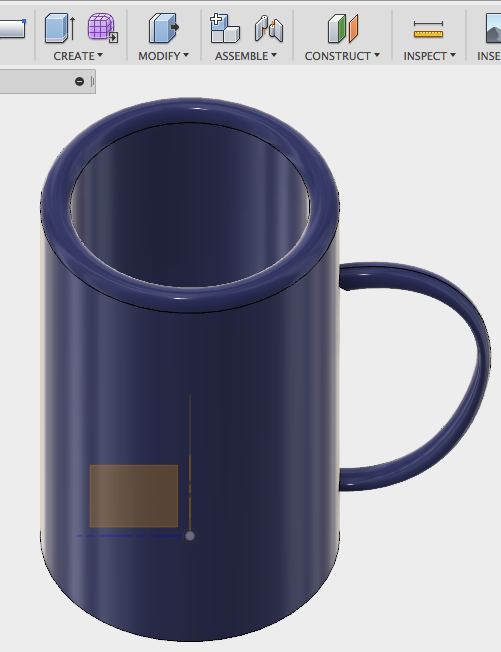
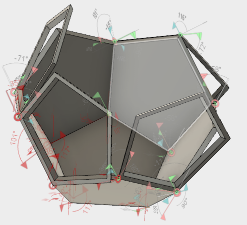

5. günde de önceki gün öğrendiklerimize bir şeyler daha ekleyeceğimiz 3D modelleme konusuna geçtik.
Yine Fusion 360 uygulaması ile nasıl 3D modellemeler yapabileceğimizi öğrendik.
Program ile 3D modellemeler yapmak için gerekli bilgileri edindikten sonra kendi istediğimiz objelerin modellemelerini yapmaya başladık.
Ben, silindir şeklini ve programın farklı özelliklerini de kullanmam gereken bir bardak modellemedim.
 Yaptığım bardak modeli.Bilgilerimizi Kullanmak
Daha sonra biraz zorlayıcı bir modelleme yapmaya başladık.
Oluşturduğumuz içleri dolu ve boş olan altıgen şekillerini birleştirerek saksıya benzer bir şekil elde ettik.
 Yapım aşamasında.Kısaca yine güzel bir gündü. 3D prototipleme yapmak 2D prototiplemeye göre daha çok hoşuma gitti çünkü modellediğimiz şekillerin gerçek hayattakine daha çok benzemeleri ilgimi çekti.
Arka plan resmi: Buradan siteye ulaşabilirsiniz.